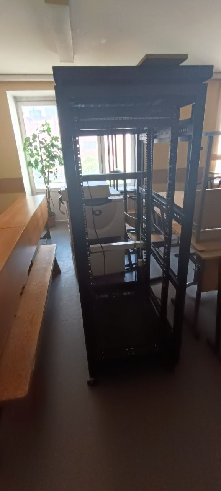
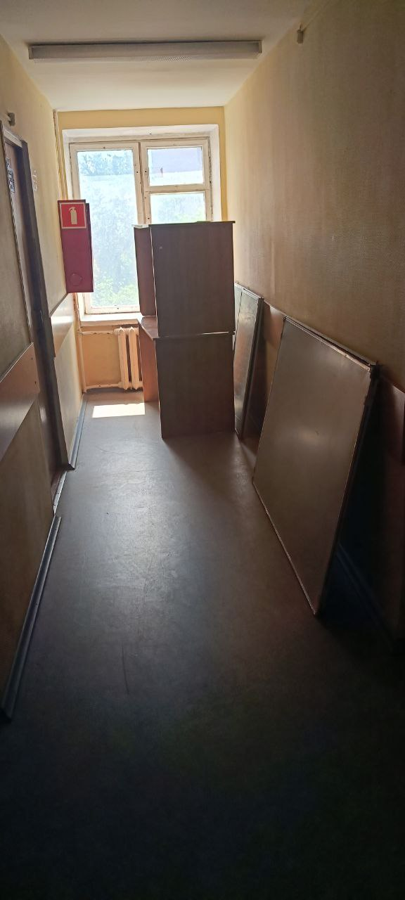

Производственная практика
Моя производственная практика проходила в Московском колледже транспорта.
Фотографии с места практики


Информация о компании
Московский колледж транспорта - это структурное подразделение Российского университета транспорта.
Колледж готовит квалифицированных специалистов среднего звена для железнодорожного, строительного, IT- и транспортно-логистического секторов.